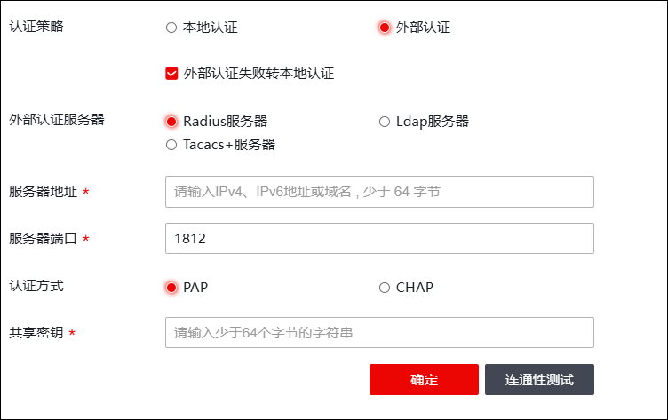

认证策略是NGFW针对管理员身份进行认证、管理的安全模块。不仅能够本地认证认，还可以向外部认证服务器转发管理员的认证请求。外部身份认证需要配置NGFW与外部认证服务器的连接，保证连通性。当管理员发起认证请求时，NGFW会将管理员的身份信息转发到对应的认证服务器进行认证，认证成功的管理员会与某一角色绑定，即实现授权，从而进行基于角色的访问控制。
配置认证策略的操作步骤如下：
| 步骤1 | 选择 ，如下图所示。 |

各项参数的具体说明如下表所示。
参数 |
说明 |
|
|---|---|---|
认证策略 |
选择认证策略。支持本地认证和外部认证。 |
|
外部认证失败转本地认证 |
选择是否勾选外部认证失败转本地认证。勾选后，则当外部认证失败时，进行本地认证。 |
|
外部认证服务器 |
选择需要进行外部认证的服务器。支持：Radius服务器、Tacacs服务器、Ldap服务器。 Tacacs服务器、Ldap服务器配置参数参见 认证服务器。 |
|
Radius服务器 |
服务器地址 |
设置Radius服务器地址。 |
服务器端口 |
设置认证服务器的监听认证请求的服务端口。 |
|
认证方式 |
设置Radius认证协议的认证方法。 可选项：PAP、CHAP。 |
|
共享秘钥 |
设置Radius认证服务器端的共享密钥。 |
|
Ladp服务器 |
服务器地址 |
必填项，设置Ldap服务器的IP地址。点分十进制格式，例如：192.168.1.1。 |
服务器端口 |
配置Ldap服务器的监听认证请求的服务端口。取值为1-65535的整数，默认值为389。 |
|
服务器认证 |
选择是否开启服务器认证功能。开启后需设置服务器用户名和密码。 |
|
Ladp服务器类型 |
选择该Ladp服务器的类型。 说明： Ldap是一个开放的协议，不同的公司有不同的实现方法，因此需要选择Ldap服务器的类型。可选项为MS-AD、SUN ONE、NOVELL和other（分别表示微软公司的AD服务器、SUN ONE公司的Ldap服务器、NOVELL公司的Ldap服务器和其他公司的Ldap服务器）。 |
|
服务器DN |
必选项。配置该Ldap服务器的域名。此处需要输入域名分解格式（不同厂家的Ldap服务器需要设置不同的关键字。例如：假设AD服务器域名为“sina.com”则此处应输入“dc=sina, dc=com”。） 说明： 在Ldap服务器上可以通过“我的电脑”右键菜单的 来查看服务器所在的域。 |
|
用户属性 |
设置一个属性的值作为Ldap服务器上用户名属性，也可选择自定义。 |
|
用户组属性 |
设置一个属性的值作为Ldap服务器上用户所关联的用户组。 |
|
用户树层级 |
设置用户树层级，可选择SUBTREE或ONE LEVEL。 |
|
用户过滤条件 |
设置Ldap用户过滤条件。 |
|
Tacacs服务器 |
服务器地址 |
必填项。配置Tacacs服务器的IP地址。点分十进制格式，例如：192.168.1.1。 |
服务器端口 |
配置Tacacs服务器的监听认证请求的服务端口。取值为1-65535的整数，默认值为49。 |
|
认证方法 |
配置Tacacs认证协议的认证方法。可选项：PAP和CHAP，默认值为PAP。 |
|
预共享密钥 |
必填项。配置Tacacs服务器端的共享密钥。 |
|
| 步骤2 | 配置完成后点击【确定】完成配置 |
| 步骤3 | 点击【连通性测试】可测试与外部认证服务器是否可达。 |